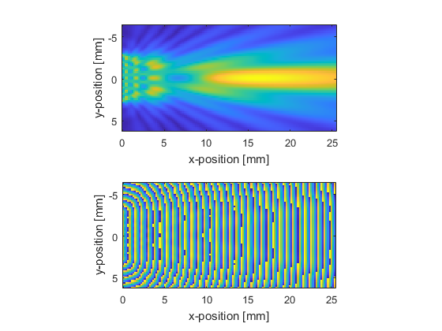
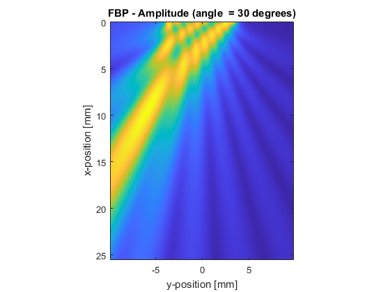

fastBeamPattern
Calculate beam pattern from an arbitrary phased array.
Syntax
[amp_out, phase_out] = fastBeamPattern(amp_in, phase_in, dx, f, c0) [amp_out, phase_out] = fastBeamPattern(amp_in, phase_in, dx, f, c0, ...) [amp_out, phase_out, field_t1] = fastBeamPattern(amp_in, phase_in, dx, f0, c0, ...) [amp_out, phase_out, field_t1, field_t2] = fastBeamPattern(amp_in, phase_in, dx, f0, c0, ...)
Description
fastBeamPattern calculates the steady state beam pattern (amplitude and phase) from an arbitrary phased array driven by a single frequency continuous wave sinusoid in a homogeneous and lossless medium. The phased array is defined in completely general form as a matrix of amplitude and phase. This allows arrays of arbitrary geometry and numbers of elements to be defined.
The solution is based on the Green's function for the homogeneous wave equation expressed in the spatial frequency domain or k-space. The temporal convolution integral is solved analytically, and the remaining integrals are expressed in the form of the spatial Fourier transform. This allows the acoustic pressure for all spatial positions at any time t > 0 to be calculated in a single step without numerical quadrature. To avoid wave wrapping, the domain size used for calculation is automatically expanded to a suitable dimension size with small prime factors.
Examples
The example below shows how to compute the steady state amplitude and phase from a rectangular piston transducer in 3D. The central plane through the transducer is plotted.
% define source parameters c = 1510; % [m/s] f = 2e6; % [Hz] ap_size = 6e-3; % [m] % define grid parameters Nx = 128; % [grid points] Ny = 64; % [grid points] Nz = 64; % [grid points] dx = 2e-4; % [m] % convert aperture size to grid points ap_size = round(ap_size / (2 * dx)); % create a square source aperture amp_in = zeros(Nx, Ny, Nz); amp_in(1, Ny/2 - ap_size + 1:Ny/2 + ap_size, Nz/2 - ap_size + 1:Nz/2 + ap_size) = 1; % calculate beam pattern [fbp_amp, fbp_phase] = fastBeamPattern(amp_in, 0, dx, f, c); % extract just the central plane fbp_amp = squeeze(fbp_amp(:, :, Nz/2)).'; fbp_phase = squeeze(fbp_phase(:, :, Nz/2)).'; % create plot axes x_axis = (0:Nx - 1) * dx * 1e3; y_axis = (-Ny/2:Ny/2 - 1) * dx * 1e3; % plot the amplitude figure; subplot(2, 1, 1); imagesc(x_axis, y_axis, fbp_amp); axis image; xlabel('x-position [mm]'); ylabel('y-position [mm]'); subplot(2, 1, 2); imagesc(x_axis, y_axis, fbp_phase); axis image; xlabel('x-position [mm]'); ylabel('y-position [mm]'); colormap(parula(256));
The example below shows how to use the phase input to steer the output from a linear array transducer in 2D. The steady state pressure field for each steering angle is dynamically updated.
% define source parameters f = 1e6; % [Hz] c = 1500; % [m/s] % define grid size Nx = 256; % [grid points] Ny = 196; % [grid points] dx = 0.1e-3; % [m] % create linear aperture aperture_width = 80; amp_in = zeros(Nx, Ny); amp_in(1, Ny/2 - aperture_width/2 + 1: Ny/2 + aperture_width/2) = 1; % define range of steering angles angle_array = 0:2:30; % create figure window and plot axes figure; x_axis = (0:Nx - 1) * dx * 1e3; y_axis = (-Ny/2:Ny/2 - 1) * dx * 1e3; % loop through steering angles for index = 1:length(angle_array) % current value of steering angle steering_angle = angle_array(index); % calculate phase offset phase_term = 2 * pi * f * dx * (0:aperture_width - 1) * sind(steering_angle) / c; % assign phase map phase_in = zeros(Nx, Ny); phase_in(1, Ny/2 - aperture_width/2 + 1: Ny/2 + aperture_width/2) = phase_term; % compute beam pattern amp_out = fastBeamPattern(amp_in, phase_in, dx, f, c); % plot imagesc(y_axis, x_axis, amp_out); axis image; xlabel('y-position [mm]'); ylabel('x-position [mm]'); title(['FBP - Amplitude (angle = ' num2str(steering_angle) ' degrees)']); colormap(parula(256)); drawnow; end
Inputs
amp_in |
matrix of the source amplitude at each grid point [Pa] |
phase_in |
matrix of the source phase at each grid point [rad] |
dx |
grid spacing [m] |
f0 |
source frequency [Hz] |
c0 |
medium sound speed [m/s] |
Optional Inputs
Optional 'string', value pairs that may be used to modify the default computational settings.
| Input | Valid Settings | Default | Description |
|---|---|---|---|
'GridExpansionFactor' |
(numeric scalar) | 1.1 |
Option to specify the multiplicative factor used to calculate the minimum expanded grid size to avoid wave wrapping based on t1. Note, setting a value for the optional input 'ExpandedGridSize' will override this value. |
'GridSearchRange' |
(integer numeric scalar) | 50 |
Option to set the search range used to find the expanded grid size with the smallest prime factors. Note, setting a value for the optional input 'ExpandedGridSize' will override this value. |
'SaveToDisk' |
(string) | false |
String containing a filename (including pathname if required). If set, after the precomputation phase, the variables used in calculation are saved to the specified location in HDF5 format. The function then exits. The saved variables can be used to run simulations using the C++ code. |
'Time' |
(numeric scalar) | 'auto' |
Option to specify the time t1 at which the wavefield is calculated to extract the amplitude and phase |
'TimeExpansionFactor' |
(numeric scalar) | [-1, 1] |
Option to specify the multiplicative factor used to calculate t1 based on the time taken to propagate across the longest grid diagonal. Note, setting a value for the optional input 'Time' will override this value. |
'ExpandedGridSize' |
(numeric vector) | 'auto' |
Option to specify the size of the grid after expansion used to avoid wave wrapping. |
Outputs
amp_out |
matrix of the output amplitude at each grid point in steady state [Pa] |
phase_out |
matrix of the output phase at each grid point in steady state [rad] |
field_t1 |
pressure field at time t1 |
field_t2 |
pressure field at time t2 |
See Also
fastBeamPatternC, kspaceFirstOrder2D, kspaceFirstOrder3D